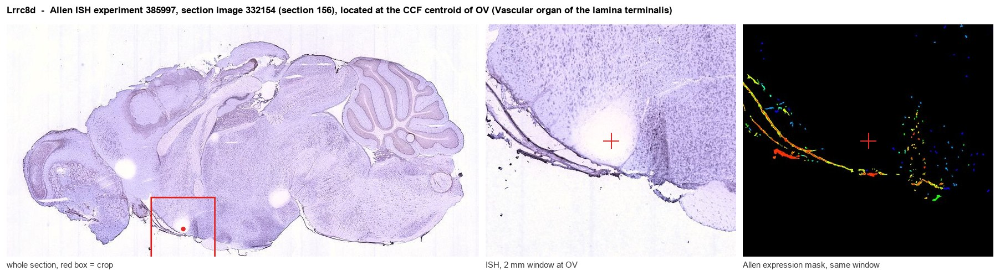
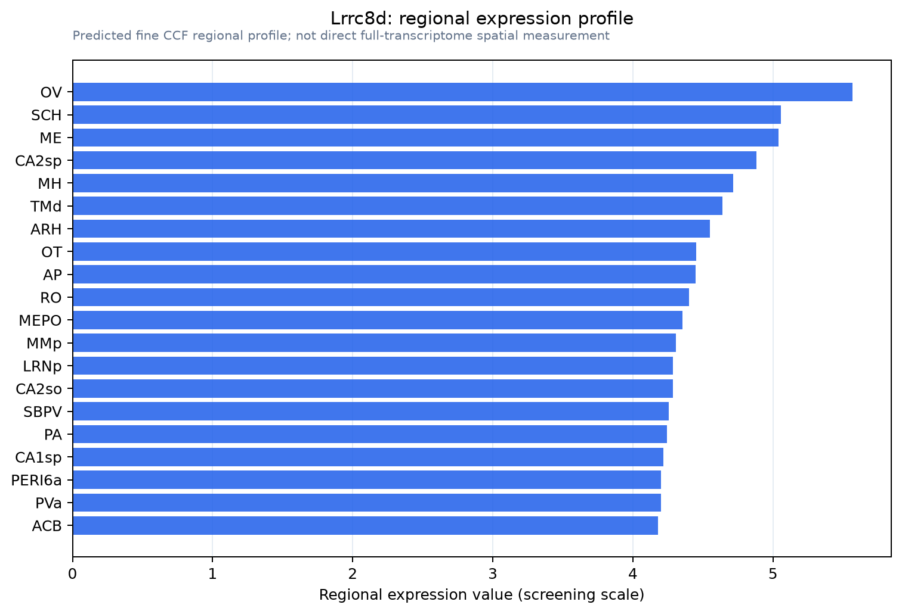

Lrrc8d
Volume-regulated anion channel subunit LRRC8D (Leucine-rich repeat-containing protein 5) (Leucine-rich repeat-containing protein 8D)
Spatial tier: REGION_BIASED · Class: ION_CHANNEL · Top region: OV (Vascular organ of the lamina terminalis) · Positive regions: 34/554
Function in OV: evidence, prediction, innovation
- Gene function
- LRRC8D is one of five subunits (LRRC8A-E) that assemble into the volume-regulated anion channel, VRAC. LRRC8A is obligatory while LRRC8B-E set permeability; channels containing LRRC8D are the ones that conduct large organic osmolytes such as taurine and myo-inositol, plus drugs like cisplatin, and they open when a cell swells under hypotonic conditions.
- Region function
- The vascular organ of the lamina terminalis (OVLT) is a sensory circumventricular organ lacking a blood-brain barrier; its glutamatergic osmosensitive neurons detect plasma hypertonicity and drive thirst, vasopressin release and sympathetic/thermoregulatory responses through the SFO-MnPO-PVN network.
- Published in this region
- inferred No region-specific literature found. The closest evidence is cell-type matched rather than region matched: Schober 2017 showed LRRC8D-containing VRACs mediate swelling-activated taurine efflux in astrocytes, and Chandler 2026 showed subunit composition sets glutamate permeability of astrocytic VRAC.
- Predicted function
- Prediction: this is the most mechanistically compelling gene of the OVLT set. LRRC8D-containing VRACs would give OVLT cells a direct transducer of the very stimulus the organ exists to detect: hypotonic swelling opens the channel, releasing taurine and glutamate that inhibit or excite neighbouring osmosensory neurons and complement TRPV1/Nax-dependent intrinsic osmoreception. Conditional Lrrc8d (or Lrrc8a) deletion in the lamina terminalis should reduce swelling-evoked taurine/glutamate release and shift the osmotic threshold for drinking and vasopressin secretion, producing over-drinking to hypotonic challenge.
- Innovation
- ★★★★★ 5/5 VRAC is the textbook osmotic sensor of cell biology but has never been tested in the brain's dedicated osmosensory organ.
- Tools
- VRAC blockers DCPIB and carbenoxolone; Lrrc8a and Lrrc8d floxed/knockout mouse lines; anti-LRRC8D antibodies; OVLT-targeted AAV plus Nkx2.1-Cre, Slc17a6-Cre or GFAP-CreER for cell-type specificity.
- References
Direct evidence located at the region

Allen ISH experiment 385997, section image 332154 (section 156): the section that contains the CCF centroid of Vascular organ of the lamina terminalis according to the Allen image-to-atlas alignment (reference_to_image), with a 2 mm window around that point. Left: whole section, red box = window. Middle: ISH signal. Right: Allen's expression-mask view of the same window. open this image in the Allen viewer
Direct spatial evidence

Regional expression figure

Predicted WMB × fine-CCF profile; not direct full-transcriptome spatial measurement.
Spatial profile
Evidence and specificity
- Evidence status
- PREDICTED_FINE
- Direct sources
- None; predicted localization only
- Exclusive threshold
- 12 positive regions out of 554
- Spatial specificity
- 0.289
- Top-region fraction
- 0.049
- Filter status
- PASS
Interpretation limits
- Cell-type-to-region projection is imputed expression, not direct spatial measurement.
- Adult reference atlases do not establish stability across age, sex, strain, state, or disease.
- Transcript abundance does not guarantee protein abundance or genetic-tool performance.